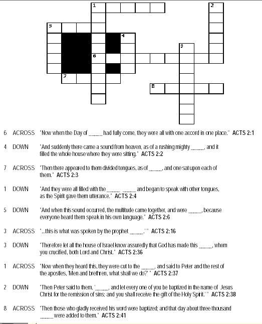

Read the lessons at the Vanderbilt Library website: http://divinity.lib.vanderbilt.edu/lectionary/BEaster/bPentecost.htm
Middle-School Pew-work ...Page 2
|
1 The
hand of the LORD was upon me, and carried me out in the spirit of
the LORD, and set me down in the midst of the valley which was
full of bones, |
you
with skin, and put breath in you, and ye shall live; and ye shall
know that I am the LORD. |
11 Then
he said unto me, Son of man, these bones are the whole house of
Israel: behold, they say, Our bones are dried, and our hope is
lost: we are cut off for our parts. |

Read
the lessons at the Vanderbilt Library website:
http://divinity.lib.vanderbilt.edu/lectionary/BEaster/bPentecost.htm
Sermon Summary
|
Is today's Sermon based on one of the Lessons? |
Yes / No |
|
Circle the Lesson that the Sermon is based on. |
Ezekiel
37:1-14 None of the Above |
|
What is the main point of the Sermon? |
_______________________________
|
|
Note any Scripture references the preacher makes |
_______________________________
|
|
What powerful figures of speech did the preacher use? (Metaphors, Similes, hyperbole) |
_______________________________
|
|
Now that you have thought about this Lesson, what might you do differently next week at school, at home, and at play, at work? |
_______________________________
|